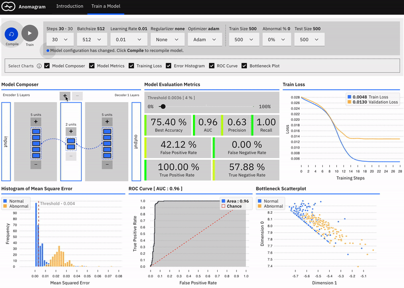

<h2>Understanding Autoencoders</h2> <h4><a href="http://zeigermann.eu">Oliver Zeigermann</a> / <a href="http://twitter.com/djcordhose">@DJCordhose</a></h4> https://djcordhose.github.io/ml-workshop/2020-ae-anomaly.html <small> https://www.meetup.com/en-AU/AI-JavaScript-London/events/269662931/ https://anomagram.fastforwardlabs.com </small>
### Questions welcome at any time
### One Question from my side _Who already has come experience in machine learning?_
### Autoencoders * neural network trained in unsupervised manner * reproduces input while going through a low-dim bottleneck * works on all kinds of data, e.g. image, audio, and tabular <img src='img/unsupervised/autoencoder_schema.jpg'> <small> https://blog.keras.io/building-autoencoders-in-keras.html </small>
### The brain might map out ideas like spaces <img src='img/embeddings/brain-abstract-knowledge.jpg' height="450"> <small> https://twitter.com/PhilosophyMttrs/status/1085242776688775169 </small>
### Why Autoencoders * compression * data denoising * dimensionality reduction * building an abstract representation for further use * clustering (for data visualization) * outlier detection
### Example Application: Outlier Detection An anomaly (outlier, abnormality) is defined as “an observation which deviates so much from other observations as to arouse suspicions that it was generated by a different mechanism” - Hawkins 1980. https://www.springer.com/gp/book/9789401539968
### Detecting Anomalies in electrocardiograms (ECG) * Train autoencoder with (mostly) normal data to low reconstruction loss * Abnormal data (not used for training) will not be reproduced well, i.e. will have high reconstruction loss * Set a threshold on loss by maximizing a metric (accuracy) * Can do without any labelling * Does not need abnormal data for training (but can tolerate some abnormal data)
### Demo: Anomagram <a href='https://victordibia.github.io/anomagram/#/'> <img src='img/embeddings/anomagram-inference.gif' height="450"> </a> <br> <small> https://github.com/victordibia/anomagram https://victordibia.github.io/anomagram/#/ </small>
### Data * https://github.com/victordibia/anomagram/#dataset * http://www.timeseriesclassification.com/description.php?Dataset=ECG5000 * https://archive.physionet.org/cgi-bin/atm/ATM * https://archive.physionet.org/physiobank/database/chfdb/
### Metrics * _Precision_: percentage of positive predictions that are correct * true positive / true positive + false positive (predicted as true, but is false) * _Recall_ (aka hit rate): proportion of actual positives that were correctly predicted * true positive / true positive + false negative (predicted as false, but is true) * low enough threshold will yield excellent recall but reduced precision * F1 score is the harmonic mean of the precision and recall <small> https://zackakil.github.io/precision-recall-playground/ <br> https://towardsdatascience.com/understanding-confusion-matrix-a9ad42dcfd62 <br> https://towardsdatascience.com/understanding-auc-roc-curve-68b2303cc9c5 </small>
### Exercise: Train your first Autoencoder <a href='https://victordibia.github.io/anomagram/#/train'>  </a> <br> <small> (only turn on Composer, Metrics, and Histogram) https://victordibia.github.io/anomagram/#/train </small>
### Code 1. Code Level: https://github.com/victordibia/anomagram 1. yarn start 1. http://localhost:3000/#/train 2. React Tools, Components 3. https://github.com/DJCordhose/anomagram/blob/100496e167067b708ab990e77a665cdde9df98cd/app/src/components/train/Train.jsx#L349
## Thank you - Wrapping it up * Autoencoders reproduce an input while going through a low-dim bottleneck * They are a special kind of neural network trained in unsupervised manner * Applications include * preprocessing / dimensionality reduction * anomaly detection * denoising * generating near-realistic data <div></div> <a href="http://zeigermann.eu">Oliver Zeigermann</a> / <a href="http://twitter.com/djcordhose">@DJCordhose</a>